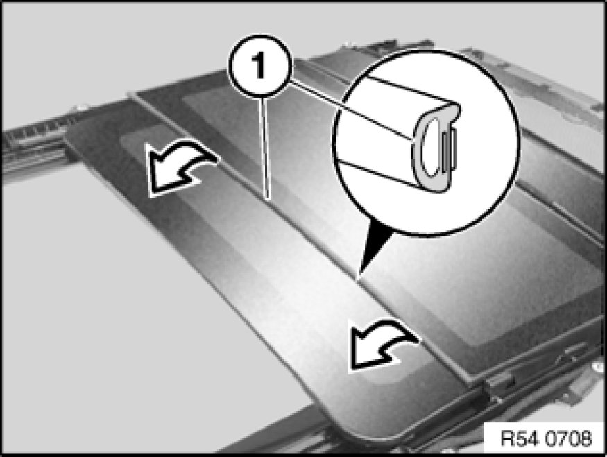

54 13 050 Replacing Seal for Slide/Tilt Sunroof Lid At Rear
54 13 050 - Replacing seal for slide/tilt sunroof lid at rear

Necessary preliminary tasks:
- Open glass slide/tilt sunroof
Note:
Follow repair instructions 54 0 ... Repair Instructions For Bonded Seals for bonded seals on glass slide/tilt sunroof.

Detach seal (1) from slide/tilt sunroof lid.
Installation:
Clean bonding surface with adhesive remover (sourcing reference: BMW Parts Service).
Press seal without stretching (squashing).
Important!
Do not touch bonding surface.
Surface temperature ≥20 °C
Incorrect bonding of the seal will result in leakage.